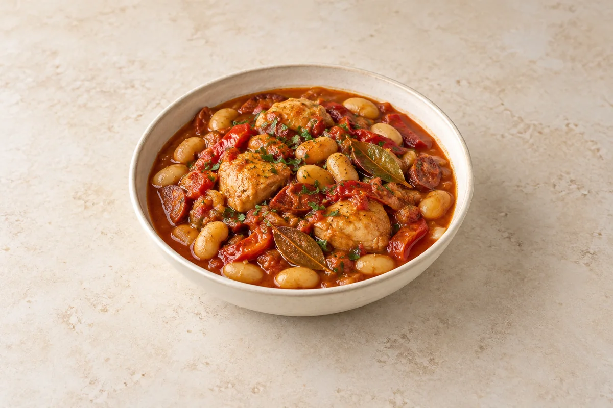

Slow Cooker
Slow Cooker Chicken, Chorizo & Butter Bean Stew
Tender chicken thighs, smoky chorizo and butter beans in a rich tomato sauce with roasted red peppers and garlic.
Ingredient quantities update automatically

Ingredients
Stew
To finish
Method
Put the chicken, roasted peppers, chopped tomatoes and bay leaf into the slow cooker.
Heat a frying pan over a medium heat. Add the chorizo and cook for about 3 minutes until it releases its oil. Add the olive oil only if the pan is dry, then add the onion and cook for about 5 minutes until softened.
Stir the garlic, smoked paprika, oregano and tomato purée into the pan and cook for 30 seconds. Pour in the measured stock and scrape up the browned bits, then transfer everything to the slow cooker. Add a little black pepper and stir to coat the chicken.
Cover and cook on low for about 5–6 hours, until the chicken is tender and cooked through. Timings vary with the cooker and size of the pieces; a clean thermometer inserted into the thickest piece should read 75°C for at least 30 seconds.
Mash about a quarter of the drained butter beans with a fork. Gently stir the mashed beans and remaining whole beans into the stew. Cover, switch to high and cook for another 20–30 minutes, or until the beans and sauce are piping hot. The mashed beans help thicken the sauce without any hob finishing.
Remove the bay leaf. Stir in the vinegar and parsley, then taste before adding salt, as the stock and chorizo are already salty. Add a little more vinegar if you want a sharper finish and serve straight from the slow cooker.